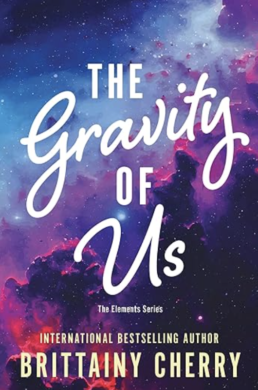

Contemporary romance novels recomendations
Our top-pick authors:
Colleen Hoover
This author has established herself as a queen of contemporary and is known by this title by most
contemporary lovers. Her stories are well-known for being extremely emotional and hard to put down.
These stories are full of compassion, support and heart. The thing that these books are notorious for
are the emotional plot.
Colleen's stories are intense, powerful and will break your heart multiple times throughout the book -
just a friendly warning. But they are all fantastic and you'll fall in love with contemporary genre.
Pick one and prepare yourself for a long day and a new you afterwards.
p.s tissues will be useful.
It ends with us
This book is intense, just a friendly warning. It's also best to go into this book not really knowing
anything about it.Just know that it's s story about a boy and a girl and all the secrets each of them
keeps and how it influences their lives in the most emotional way. The book has topics we rarely think
about thoroughly and sheds light on them that will make your heart break and have the utmost respect for
main character's strength.
This book will make you cry like a baby, it will make you scream, shake, make you crazy, sad, shocked,
impressed, surprised, swoon and all other emotions you can think of. There are some parts of this book
you'll have to reread cause you won't believe what you've just read. Just know that you won't be the
same after reading this book.
This book features the most amazing, quirky, understanding and loving friends. Friends with strong
mindsets and big hearts. It has references to popular movies and shows. It has lots of cute details and
little things that truly show how much characters care.
This book will change the way you see the world. It will uncover hidden secrets and ugly truths. But it
will also show strength, bravery and sacrifice. You will sob and then smile and hug your loved ones
tighter than you've ever had. Just know that you won't be the same after reading this book. This is the
one everyone should read, it's truly one of the best Colleen Hoover's books if not the best. Our most
heartfelt and strongest recommendation!
Maybe someday
The story of sweet sacrificial love that really is truly unconditional. The story of people coming into
our lives when we least expect them and changing everything. This book shows us that love has no limits,
no conditions, it doesn't try to change us, doesn't ask questions, it just loves. Sometimes from afar,
sometimes only in our hearts. But even then it's the strongest emotion of all!
The main characters knew about each other's existence for a long time. And even then they had a
connection. You will get this feeling of familiarity and bond right away. But you won't expect the
obstacles that come their way. You will know well why is it so hard for main characters to be together
even though you would probably make the same choices. You will definitely admire the main character for
his pure, loving and gentle heart. And the main heroine's persistence, heart and strength of character.
You will understand the whole point of unconditional love!
This book is so uniquely and mundanely beautiful, it will take a special place in your heart!
November 9th
They meet once a year on November 9th, with no communication in between. And even in those circumstances
they fall in love. This is the story of characters who are truly meant to be. They have a lot to go
through, each has insecurities and deep secrets. Each has strength and a loving heart. Each has dreams
and ambitions and each struggles to truly go after them. But they do. You can feel what they are
feeling, your heart breaks when theirs break and you smile the brightest smile when they are
happy.
You will find yourself rooting for this couple more than any other. It doesn't feel too cliche when you
know the whole story. And the story is beautiful, it's filled with magical, touching, heartfelt moments
that will make you fall in love. This is the book about innocent love, about caring for the other before
yourself. It's about making grand gestures and taking a risk at love and not caring how scary it is. And
it's also about little gesture like genuine support and being there when it is most needed and every
time in between.
This story is incredible and you will read it in one sitting giving your biggest shoutout to these
characters and their love!
Emma Hart
Honestly. if you are in the mood for incredible romance without it being too sugary sweet, check this
author. Her illustration of romance is passionate, sweet, uplifting and feels real. It's something every
one of us secretly dreams of without it feeling as too unreal or too complicated. You can't help but
fantasize about it, wishing you were the hero of the story.
You feel related to and inspired by the characters because they are so real. They teach us great values
of giving, caring and always being there. They teach us to be persistent and fight for what you want.
They teach us to always do what feels right and help people be their best selves simply by loving them.
They teach us not to give up when things get hard and that love is the greatest power of all.
Playing for keeps
The story of love overcoming darkness. A story of love that refuses to let go. A love so strong and
powerful it pushes through all the challenges and obstacles and comes out stronger. A love that is
passionate, thoughtful, understanding and forgiving, The story of a guy with a dark past that haunts
him every day meeting a girl who takes it all with her pure compassionate heart and genuine
love.
The romance in this book is off the charts! The scene in the rain can rival that of the notebook.
All the romantic interactions that you can easily have in real life, the relationships that build
into something so magically beautiful. You will see the most incredible family relationship, you
will learn great lessons of treating people right and standing strong in your beliefs and your love.
You will learn more about books and reading and literature. You will find these characters relatable
and perfect for each other.
This story is filled with simple, sweet, beautiful romantic moments that will melt your heart, and
passion that will make you jealous. It is filled with great lessons and great romance. It's filled
with genuineness, kindness, friendships and sarcasm. You will definitely enjoy the banter between
the main characters and you'll surely wish to have a friend similar to the main heroine and a
boyfriend like the main hero.
You will surely love this beautiful and strong love story!
Worth the risk
The reason we love this story so much is because it tells the most real life experiences ever. You
will catch yourself thinking "omg, it feels so real and relatable" a lot of times throughout this
book. And because it is so relatable and can happen to anyone it makes it ten times more emotional.
This is the story of coping with loss and finding happiness again. It is about two people dealing
with losing someone closest to them and falling in love in the process.
This book describes grief and all the feelings that come with it in the truest way possible. You can
relate to every emotion, every hurt speech, every thought. You will believe in this love story
because it feels more real than anything you've ever read about. These characters are real:they
disagree, they fight, they experience regret and fear. They laugh and cry, make sarcastic comments
and break down and get emotional. They want to do the right thing and they fight their demons
everyday. These characters are so perfectly imperfect, they will stay in your heart for a long
time.
This story will make you cry and smile like no other! We totally recommend!
Brittainy C. Cherry
The award for the most vulnerably beautiful, breathtaking, heart-stopping and original stories goes to
this American curly-haired woman. If you want to be truly amazed by the quality of writing, the choice
of words and truly feel the power of inspiration that words have- check her books. Every single one will
leave a mark and change the way you see the world forever.
Her books make you want to be kinder, more compassionate and someone who wears their heart on their
sleeve, bravely and unapologetically. You will feel the power of characters that come to life, poetry,
music and life-changing advice.
Be prepared to fall in love with this author's characters and having breaks between books, simply
because the characters and their stories will enchant you and won't let you go. You'll truly experience
magic- guaranteed.
The gravity of us

This is the story of complete opposites falling in love. She is the optimist, he is the pessimist. She
believes in love and loves people with all her heart, he is distant and pushing people away. These two
characters meet in the most incredible way possible and their journey is the most magical thing you will
ever experience.
You will first-hand witness the cold heart being melted under thoughtfulness and true love. You will
feel the light that comes from within our heroine and the love she gives freely to everyone. You will
meet other amazing characters who love unapologetically and with the biggest strength ever witnessed.
You will see the most loving families, you will see people who accept others into their lives and love
them as their own children. This story is filled with the most beautiful, magical, unapologetic, moving
love stories of all kind.
You will experience the strongest sibling's love, parent's love, partner's love and others. You will
feel beyond inspired, moved and grateful. This story will own your heart and you will never settle for
any other love other than what you'd experienced in this book!
Loving Mr. Daniels
This is the book that will change your life. This breathtaking and miraculously beautiful story of
moving on from heart-breaking loss and finding yourself will pull at your heartstrings and make you cry
of pure joy and overwhelming love for life, people and the world. This is also the story of finding love
in the most unexpected places from unexpected people. This is one of those books that will make you want
to live & love to the fullest and show people how much you love them every chance you get. This is one
of those books that will make you cry from intense emotions as well as tears of joy.
You will fall in love with each and every character, you will find a stronger, newer love for music and
literature, you will fall in love with life, with all the pains and joys that it's filled with. You will
experience great teaching and great life-lessons. You will know unconditional support and love with no
judgement, holding on and letting go, making our loved ones proud and living life for those who are
gone.
The words in this book are the most powerful! Brittainy C Cherry uses the power and beauty of words to
the max in this book. This book is full of miracles that you will be thankful for for the rest of your
life!